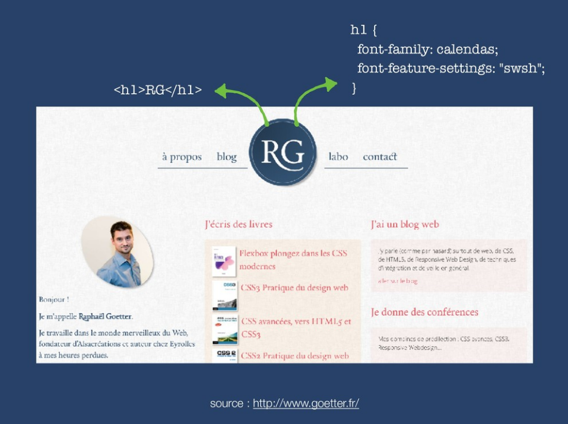

Retour sur
21 & 22 octobre 2019
Au dela des couleurs.
Des interfaces adaptées au daltonisme.
Laura Wacrenier
UX Designer @SonarSource
SonarQube
- Utilisation forte du rouge et du vert
- Nombre de dashboards importants
- Graphiques avec uniquement la couleur
- MapView avec uniquement les couleurs
Métier de développeur
Métier de développeur
Métier de développeur
Le daltonisme touche :
- 8% des hommes caucasiens
- Seulement 0,5% des femmes
- Lié au chromosome X
« On sait tous qu'il y voit rien ... »
Types de daltonismes
Lié aux cones
Rouge Vert Bleu
Le plus courant touche le cône vert (Deuteranopie)
Bonnes pratiques
- WCAG : guide pour l'accessibilité des contenus web
- Contrastes : AA minimum
- Outils : Devtools Chrome && Firefox (onglet accessibilité)
Bonnes pratiques
- Ne pas se reposer seulement sur les couleurs
- Exemple : e-commerce, choix des couleurs (Ajouter un nom parlant de la couleur)
- Souligner les liens
- Mode spéciaux (si besoin)
- Il faudrait que ça soit accessible par défaut
« Jamais personne ne s'est plaint qu'un site-web était trop facile à lire »
« Tout le monde vieillit »
« Peu de retraités qui codent avec SonarQube »
Par où on commence
« Consider it as a bug »
Traité au fil de l'eau
Faire des tickets détaillés et facile à traiter (quick win)
Retours utilisateurs à diffuser dans l'équipe
Approfondir le sujet
Slides : https://drive.google.com/file/d/1IUtL_4KIRtLPfuTKsYxjcWHAftXPXd6L/view
Vidéo : https://www.youtube.com/watch?v=29EpQDs0Td8
Twitter : @Laoraw
L'épopée des polices CSS
De Comic Sans aux fonts variables
Raphaël Goetter
Alsacreations
Timeline
Comic Sans
1995
Jugée infantile
Utilisée un peu partout
Recommandée pour la dislexie
Favorise la mémorisation de contenus (étude réalisée à Chesterfield 2011)
Woff
Web Open Font Format
Version 1.0 (2009) par Mozilla, Microsoft et Opera
Version 2.0 (2013) par Google
CSS3
Effets de texte qui mettent le f e u
Icon Fonts
Font Awesome
Icon Fonts
Au début avec un caractère par icône
@font-face {
font-family: MyIconFont;
src: url("/url/my_icon_font.ttf")
}
.icon-twitter::before {
font-family: MyIconFont;
content: 't';
}
<i class="icon-twitter"></i>Twitter
<link
href="https://fonts.googleapis.com/icon?family=Material+Icons"
rel="stylesheet">
<span class="material-icons">face</span>
Ligatures
Variable Fonts (2016)
proposé par Adobe, Apple, Google et Microsoft
Exemple : League Spartan
Peut servir à plein d'autre choses (exemple 1 / exemple 2 / exemple 3)
Timeline
Approfondir le sujet
Slides : https://speakerdeck.com/goetter/lepopee-des-polices-web-de-comic-sans-aux-variable-fonts
Merci

Philippe TONY
Softeam Digital
Slides :